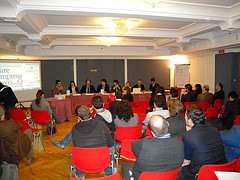

|
 Segnala
ad un amico
| Condividi su Segnala
ad un amico
| Condividi su


 |
Commenti
|
Commenti

Come le imprese usano il 2.0
A "Fare impresa 2.0", evento tenutosi a Napoli il 4 marzo scorso, numerosissime testimonianze di aziende e professionisti che hanno dimostrano come l'approccio 2.0 consente di lanciare servizi e prodotti innovativi.
di
Nicolò Occhipinti

Originale anche nella realizzazione (organizzato da un consulente e formatore di marketing digitale, Pasquale Popolizio, e non da aziende, enti o associazioni), "Fare impresa 2.0" è stato un evento strutturato in quattro tavole rotonde che ha attirato l'attenzione di numerosi professionisti e aziende desiderose di ascoltare la testimonianza di coloro che con il 2.0 sono riusciti a fare business con successo, coinvolgendo i propri utenti in un rapporto di co-creazione.
Si è discusso di innovative forme di finanziamento 2.0 all'impresa. "Questo orologio che indosso al polso è un iPod! Un tizio ha avuto l'idea di creare un cinturino su cui montare l'iPod, e per poter realizzare la sua idea si è fatto finanziare online, tramite Kickstarter", ha esordito Michele Ficara Manganelli, direttore editoriale Pubblicità Italia e moderatore della tavola rotonda "Innovare, crescere, competere: soluzioni e scenari digitali". L'inventore dell'orologio-iPod, chiamato "TikTok and LunaTik", ha raccolto oltre 941.000 dollari per finanziare il suo progetto semplicemente inserendo un video su Kickstarter per illustrare la sua idea e spiegando agli investitori cosa avrebbero ottenuto in cambio del loro contributo economico al progetto.
Nella stessa tavola rotonda, Nino Ragosta, fondatore di fantagazzetta.com, ha mostrato come con una semplice idea (portare il "fantacalcio" sul web e costruirci attorno una community), può generare rapidamente elevati profitti grazie a un elevatissimo traffico utenti: 40 milioni di pagine viste al mese, 1,5 milioni di visitatori unici al mese e 450.000 iscritti.
Introdotta dal giornalista Federico Guerini, la seconda tavola rotonda si è focalizzata sulla gestione delle start-up. Per sviluppare un'idea imprenditoriale, si può oggi sfruttare l'enorme potenziale creativo offerto dagli utenti della rete. "Meglio rivelare le idee e rischiare di essere copiati: il vantaggio che si può trarre dalla partecipazione della rete nello sviluppo dell'idea è spesso maggiore dei possibili svantaggi", ha spiegato Stefano Consiglio, docente di Organizzazione aziendale all'Università di Napoli Federico II, sottolineando che oggi grazie ai bassi costi di accesso conviene mettere direttamente alla prova diversi progetti, per poi scegliere quello che si rivela essere il più valido.
Nelle start-up, un ruolo chiave è giocato dalle relazioni pubbliche digitali (Digital PR), come evidenziato da Carmelo Cutuli, professionista di Pubbliche Relazioni e Comunicazione e fondatore di startupper.it. Le start-up devono sapere operare in un ecosistema in cui i principali attori sono gli investitori, gli accelleratori d'impresa, i partner, le associazioni di categoria, le opportunità, le utenze, la clientela, i media. Un ambiente complesso nel quale può essere d'aiuto all'impresa la figura professionale dello startupper.
E' intervenuto anche Mario Raffa, Assessore all’innovazione e Sviluppo del Comune di Napoli, che ha presentato gli incubatori di impresa "Napoli Est", che supporta al momento circa 60 imprese, e "Polo Orafi", focalizzato sull'artigianato di qualità.
Enrico Ratto, direttore responsabile di Eccellere e moderatore della terza tavola rotonda dal titolo "Associazionismo e PMI per l’innovazione del Paese in stile Web 2.0", ha introdotto il progetto "Città di Partenope", fondato da Claudio Agrelli - direttore creativo di Agrelli&Basta: una vera e propria città virtuale, popolata da cittadini virtuosi dotati di carte di identità virtuali, nata con l'obiettivo di combattere il malcostume, fare buona pubblicità a Napoli, dare più voce ai cittadini. Sul sito, i cittadini virtuali sono anche chiamati a votare provvedimenti (reali), implementando così un sistema di e-democracy.
Di innovazione sociale ha parlato invece Mariagrazia Andali, della Fondazione Accenture, presentando il progetto idea360, un sito che coinvolge gli utenti in tre aree: "Condividi", in cui si discutono le idee in un forum e si propongono nuovi temi; "Concorri", in cui qualsiasi organizzazione impegnata nell’innovazione sociale può cercare idee per la realizzazione dei propri progetti; "Sostieni", area in cui si incontrano le organizzazioni che necessitano di risorse economiche, tecniche e umane per realizzare progetti, con le aziende, fondazioni, enti (pubblici e privati) interessati a fornire loro tali risorse.
Anche "quelli del wi-fi libero", l'associazione Green Geek resa famosa da diversi articoli apparsi su Wired Italia, era presente all'evento per descrivere la community e il progetto Free Wi-Fi. Mario Lattuada, presidente e fondatore dell'associazione, ha illustrato il progetto Geek WiFi e ha spiegato che il funzionamento della loro community è basato sulla condivisione delle risorse e delle competenze dei soci attraverso una banca del tempo, per sviluppare progetti di comune e sociale interesse.
Pasquale Popolizio, ideatore dell'evento e responsabile del dipartimento di marketing digitale di AISM e vicepresidente di IWA Italy, ha fatto il punto sulle professioni del web. La definizione di profili professionali generici e specifici per il web è uno degli obiettivi principali dell'associazione IWA, un'opera complessa e in continua evoluzione che consentirà di fare chiarezza a vantaggio deli professionisti che operano in questo campo e delle aziende.
"Mediterraneo digitale" era il titolo dell'ultima tavola rotonda, moderata da Enzo Agliardi, caporedattore della testata Il Denaro, che ha visto anche la partecipazione di Michele Mezza, vice direttore di RAI International. Antonello Fratoddi, presidente di Mediterraid, ha presentato il progetto Mediterraneo Digitale, un viaggio di circa 22000 Km lungo tutta la costa del Mediterraneo per mappare l'evoluzione della comunicazione in tutti i paesi che incontrerà.
Quello che emerge dall'evento è il quadro di un'Italia in evoluzione, che comincia a utilizzare le nuove tecnologie web per migliorare in efficacia ed efficienza e innovare più rapidamente. Amedeo Lepore, docente di Marketing evolution all'Università di Bari e presidente del Comitato Tecnico Scientifico di AISM, per concludere con una nota ottimistica sull'Italia, ha citato una dichiarazione di Chris Anderson, direttore di Wired e autore del famoso libro "La coda lunga": "Credo che il resto del mondo stia cercando di arrivare dove l’Italia era già secoli fa. Una nazione caratterizzata da piccole e medie imprese, con due industrie più importanti come quella vinicola e della moda che sono tipicamente business di nicchia. In un certo senso, la tecnologia moderna sta solo dando al resto del mondo la possibilità di fare propri valori che questo paese ha sempre celebrato. Quindi voi siete avanti, non indietro.”
PRESENTAZIONI
Cllicca QUI per vedere i video e le fotografie dell'evento
8-3-2011
Contenuti concessi sotto Licenza Creative Commons Attribuzione - Non commerciale 3.0 Unported
Sostieni Eccellere con una donazione

Commenti
|